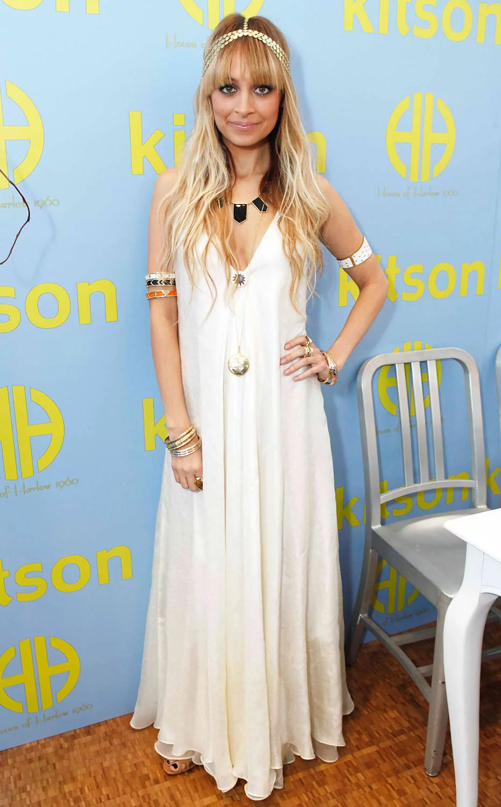
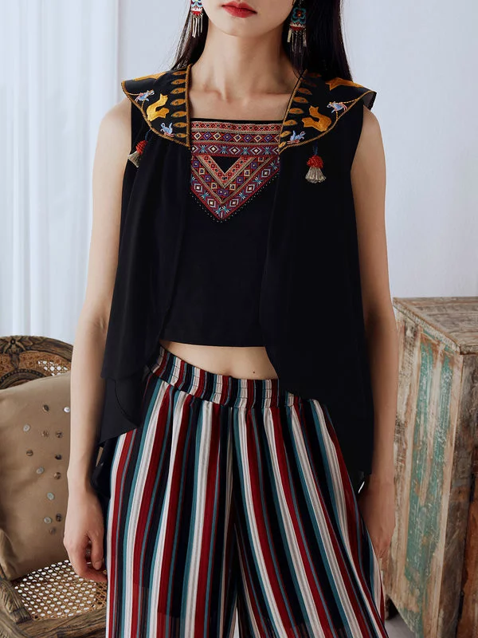
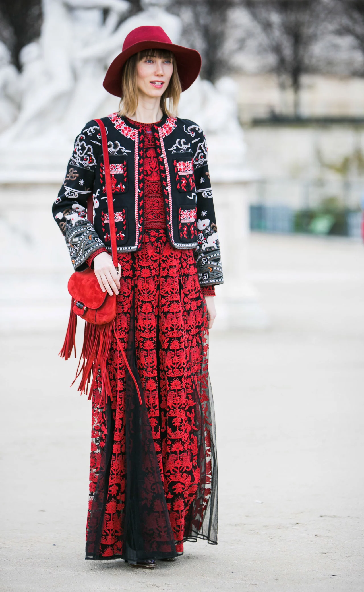

Congratulations! You've picked the Bohemian wardrobe.
The best way to describe bohemian would be to use the word non-traditional. A style which is similar to arty, bohemian style uses extravagant and wild patterns on exotic textures. It can be characterized as an inspiration from gypsy and hippie looks.


